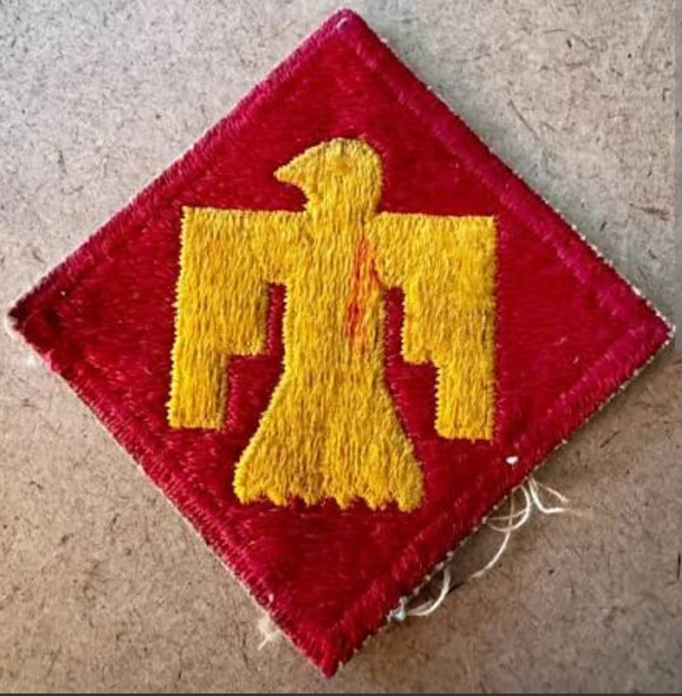

Introduction
Surnommée « Thunderbird », la **45th Infantry Division** regroupe à l'origine des gardes nationaux de l'Oklahoma, du Nouveau-Mexique, du Colorado et de l'Arizona, comptant un fort pourcentage d'Amérindiens.
Qualifiée par Patton comme l'une des meilleures divisions de l'armée, elle a effectué **quatre débarquements amphibies majeurs** (Sicile, Salerne, Anzio, Provence) et plus de 511 jours de combat.
Origine et insigne
Créée en 1920, la division utilisait à l'origine un symbole amérindien traditionnel (une swastika jaune sur fond rouge). En 1939, face à la montée du nazisme, l'insigne est officiellement remplacé par le **Thunderbird** (l'Oiseau de Tonnerre mythologique amérindien) doré sur un écusson carré rouge posé sur la pointe.
Réactivée en septembre 1940, elle est commandée en Europe par les généraux Troy Middleton puis **Robert T. Frederick**.

1943–1944 : La Méditerranée, Anzio et la Provence
Après la Sicile (juillet 1943) et Salerne (septembre 1943), la 45e Division affronte l'enfer d'**Anzio** en janvier 1944, tenant ses tranchées sous un pilonnage massif pendant quatre mois.
Le 15 août 1944, elle participe au **débarquement de Provence** (*Opération Dragoon*), remonte la vallée du Rhône et s'enfonce dans les denses combats des Vosges et d'Alsace durant l'hiver 1944-1945.

1945 : Libération de Dachau et prise de Munich
Après avoir percé la ligne Siegfried et franchi le Rhin, la division s'empare de Nuremberg en avril 1945.
Le **29 avril 1945**, les hommes de la 45th Division découvrent et **libèrent le camp de concentration de Dachau**, confrontés aux horreurs du système concentrationnaire nazi. Le lendemain, la division s'empare de Munich.
Bilan humain et héritage
En 511 jours de combat (l'un des totaux les plus élevés de l'US Army), la 45th Infantry Division enregistre plus de **20 900 pertes au combat** (dont 3 650 tués).
Huit de ses soldats ont reçu la Medal of Honor. La division a capturé plus de 120 000 prisonniers ennemis.
Voir aussi
Page du Musée HOP WW2 – Section Unités & Divisions Célèbres